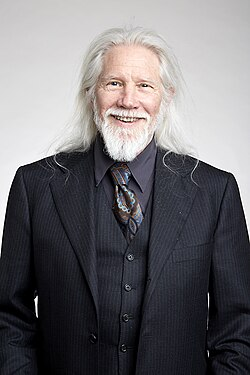
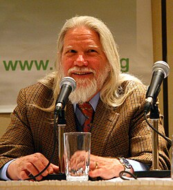

Whitfield Diffie | |
|---|---|
 Whitfield Diffie at the Royal Society admissions day in London, July 2017 | |
| Born | Bailey Whitfield Diffie June 5, 1944 Washington, D.C., U.S. |
| Education | Massachusetts Institute of Technology (BS) |
| Known for | Diffie–Hellman key exchange |
| Awards |
|
| Scientific career | |
| Fields | Cryptography |
| Institutions | Stanford University Sun Microsystems ICANN Zhejiang University[3] Royal Holloway (ISG)[4] |
| Website | cisac |
Bailey Whitfield 'Whit' Diffie ForMemRS (born June 5, 1944) is an American cryptographer and mathematician and one of the pioneers of public-key cryptography along with Martin Hellman and Ralph Merkle. Diffie and Hellman's 1976 paper New Directions in Cryptography[5] introduced a radically new method of distributing cryptographic keys, that helped solve key distribution—a fundamental problem in cryptography. Their technique became known as Diffie–Hellman key exchange. The article stimulated the almost immediate public development of a new class of encryption algorithms, the asymmetric key algorithms.[6]
After his career at Sun Microsystems, where he became a Sun Fellow, Diffie served for two and a half years as Vice President for Information Security and Cryptography at the Internet Corporation for Assigned Names and Numbers (2010–2012). He has also served as a visiting scholar (2009–2010) and affiliate (2010–2012) at the Freeman Spogli Institute's Center for International Security and Cooperation at Stanford University, where he is currently a consulting scholar.[7]
Diffie was born in Washington, D.C. His mother is Justine Louise (Whitfield), a writer and scholar. His father is Bailey Wallys Diffie, who taught Iberian history and culture at the City College of New York.[8] His interest in cryptography began at "age 10 when his father, a professor, brought home the entire crypto shelf of the City College Library in New York".[8]
At Jamaica High School in Queens, New York, Diffie "performed competently" but "never did apply himself to the degree his father hoped". Although he graduated with a local diploma, he did not take the statewide Regents examinations that would have awarded him an academic diploma because he had previously secured admission to the Massachusetts Institute of Technology on the basis of "stratospheric scores on standardized tests".[9] During the first two years of his undergraduate studies at MIT, he felt unengaged and seriously considered transferring to the University of California, Berkeley, which he perceived as a more hospitable academic environment. At MIT, he began to program computers (in an effort to cultivate a practical skill set) while continuing to perceive the devices "as very low class... I thought of myself as a pure mathematician and was very interested in partial differential equations and topology and things like that."[9]
Diffie received a Bachelor of Science with a major in mathematics from the MIT in 1965.[9]

From 1965 to 1969, he remained in Greater Boston as a research assistant for the MITRE Corporation in Bedford, Massachusetts. As MITRE was a defense contractor, this position enabled Diffie (a pacifist who opposed the Vietnam War) to avoid the draft. During this period, he helped to develop MATHLAB (an early symbolic manipulation system that served as the basis for Macsyma) and other non-military applications.
In November 1969, Diffie became a research programmer at the Stanford Artificial Intelligence Laboratory, where he worked on LISP 1.6 (widely distributed to PDP-10 systems running the TOPS-10 operating system) and correctness problems while cultivating interests in cryptography and computer security under the aegis of John McCarthy.
Diffie left SAIL to pursue independent research in cryptography in May 1973. As the most current research in the field during the epoch fell under the classified oversight of the National Security Agency, Diffie "went around doing one of the things I am good at, which is digging up rare manuscripts in libraries, driving around, visiting friends at universities." He was assisted by his new girlfriend and future wife, Mary Fischer.[10]
In the summer of 1974, Diffie and Fischer met with a friend at the Thomas J. Watson Research Center (headquarters of IBM Research) in Yorktown Heights, New York, which housed one of the only nongovernmental cryptographic research groups in the United States. While group director Alan Konheim "couldn't tell [Diffie] very much because of a secrecy order," he advised him to meet with Martin Hellman, a young electrical engineering professor at Stanford University who was also pursuing a cryptographic research program.[11] A planned half-hour meeting between Diffie and Hellman extended over many hours as they shared ideas and information.[11]
Hellman then hired Diffie as a grant-funded part-time research programmer for the 1975 spring term. Under his sponsorship, he also enrolled as a doctoral student in electrical engineering at Stanford in June 1975; however, Diffie was once again unable to acclimate to "homework assignments [and] the structure" and eventually dropped out after failing to complete a required physical examination: "I didn't feel like doing it, I didn't get around to it."[9] Although it is unclear when he dropped out, Diffie remained employed in Hellman's lab as a research assistant through June 1978.[12]
In 1975–76, Diffie and Hellman criticized the NBS proposed Data Encryption Standard, largely because its 56-bit key length was too short to prevent brute-force attack. An audio recording survives of their review of DES at Stanford in 1976 with Dennis Branstad of NBS and representatives of the National Security Agency.[13] Their concern was well-founded: subsequent history has shown not only that NSA actively intervened with IBM and NBS to shorten the key size, but also that the short key size enabled exactly the kind of massively parallel key crackers that Hellman and Diffie sketched out. When these were ultimately built outside the classified world (EFF DES cracker), they made it clear that DES was insecure and obsolete.
From 1978 to 1991, Diffie was Manager of Secure Systems Research for Northern Telecom in Mountain View, California, where he designed the key management architecture for the PDSO security system for X.25 networks.[14] He was named an IEEE fellow in 2025 for the development of public key cryptography and its applications.[15]
In 1991, he joined Sun Microsystems Laboratories in Menlo Park, California, as a distinguished engineer, working primarily on public policy aspects of cryptography. Diffie remained with Sun, serving as its chief security officer and as a vice president until November 2009. He was also a Sun Fellow.[16]
As of 2008, Diffie was a visiting professor at the Information Security Group based at Royal Holloway, University of London.[17]
In May 2010, Diffie joined the Internet Corporation for Assigned Names and Numbers (ICANN) as vice president for information security and cryptography, a position he left in October 2012.[18]
Diffie is a member of the technical advisory boards of BlackRidge Technology, and Cryptomathic where he collaborates with researchers such as Vincent Rijmen, Ivan Damgård and Peter Landrock.[19]
In 2018, he joined Zhejiang University, China, as a visiting professor, Cryptic Labs generated 2 months course in Zhejiang University.
In the early 1970s, Diffie worked with Martin Hellman to develop the fundamental ideas of dual-key, or public key, cryptography. They published their results in 1976—solving one of the fundamental problems of cryptography, key distribution—and essentially broke the monopoly that had previously existed where government entities controlled cryptographic technology and the terms on which other individuals could have access to it. "From the moment Diffie and Hellman published their findings..., the National Security Agency's crypto monopoly was effectively terminated. ... Every company, every citizen now had routine access to the sorts of cryptographic technology that not many years ago ranked alongside the atom bomb as a source of power."[8] The solution has become known as Diffie–Hellman key exchange.
Together with Martin Hellman, Diffie won the 2015 Turing Award, widely considered the most prestigious award in the field of computer science. The citation for the award was: "For fundamental contributions to modern cryptography. Diffie and Hellman's groundbreaking 1976 paper, 'New Directions in Cryptography', introduced the ideas of public-key cryptography and digital signatures, which are the foundation for most regularly-used security protocols on the internet today."[21]
Diffie received an honorary doctorate from the Swiss Federal Institute of Technology in 1992.[14] He is also a fellow of the Marconi Foundation and visiting fellow of the Isaac Newton Institute. He has received various awards from other organisations. In July 2008, he was also awarded a Degree of Doctor of Science (Honoris Causa) by Royal Holloway, University of London.[22]
He was also awarded the IEEE Donald G. Fink Prize Paper Award in 1981 (together with Martin E. Hellman),[23] The Franklin Institute's Louis E. Levy Medal in 1997[24] a Golden Jubilee Award for Technological Innovation from the IEEE Information Theory Society in 1998,[25] and the IEEE Richard W. Hamming Medal in 2010.[26] In 2011, Diffie was inducted into the National Inventors Hall of Fame and named a Fellow of the Computer History Museum "for his work, with Martin Hellman and Ralph Merkle, on public key cryptography."[27] Diffie was elected a Foreign Member of the Royal Society (ForMemRS) in 2017.[2] Diffie was also elected a member of the National Academy of Engineering in 2017 for the invention of public key cryptography and for broader contributions to privacy.
Diffie self-identifies as an iconoclast. He has stated that he "was always concerned about individuals, an individual's privacy as opposed to government secrecy."[8]
{{cite journal}}: Cite uses deprecated parameter |citeseerx= (help)
Whitfield Diffie's amazing breakthrough could guarantee computer privacy. But the Government, fearing crime and terror, wants to co-opt his magic key and listen in. ... High-tech has created a huge privacy gap. But miraculously, a fix has emerged: cheap, easy-to-use-, virtually unbreakable encryption. Cryptography is the silver bullet by which we can hope to reclaim our privacy. ... a remarkable discovery made almost 20 years ago, a breakthrough that combined with the obscure field of cryptography into the mainstream of communications policy. It began with Whitfield Diffie, a young computer scientist and cryptographer. He did not work for the government. ... He had been bitten by the cryptography bug at age 10 when his father, a professor, brought home the entire crypto shelf of the City College Library in New York. ... [Diffie] was always concerned about individuals, an individual's privacy as opposed to Government secrecy. ... Diffie, now 50, is still committed to those beliefs. ... [Diffie] and Martin E. Hellman, an electrical engineering professor at Stanford University, created a crypto revolution. ... Diffie was dissatisfied with the security [on computer systems]... in the 1960s [because] a system manager had access to all passwords. ... A perfect system would eliminate the need for a trusted third party. ... led Diffie to think about a more general problem in cryptography: key management. ... When Diffie moved to Stanford University in 1969, he foresaw the rise of home computer terminals [and pondered] how to use them to make transactions. ... in the mid-1970s, Diffie and Hellman achieved a stunning breakthrough that changed cryptography forever. They split the cryptographic key. In their system, every user has two keys, a public one and a private one, that are unique to their owner. Whatever is scrambled by one key can be unscrambled by the other. ... It was an amazing solution, but even more remarkable was that this split-key system solved both of Diffie's problems, the desire to shield communications from eavesdroppers and also to provide a secure electronic identification for contracts and financial transactions done by computer. It provided the identification by the use of 'digital signatures' that verify the sender much the same way that a real signature validates a check or contract. ... From the moment Diffie and Hellman published their findings in 1976, the National Security Agency's crypto monopoly was effectively terminated. ... Every company, every citizen now had routine access to the sorts of cryptographic technology that not many years ago ranked alongside the atom bomb as a source of power.'
Whitfield Diffie, Chief Security Officer of Sun Microsystems, is Vice President and Sun Fellow and has been at Sun since 1991. As Chief Security Officer, Diffie is the chief exponent of Sun's security vision and responsible for developing Sun's strategy to achieve that vision.
Globally recognized as a leader in public-key cryptography, encryption and network security, Diffie has a long and distinguished career as a leading force for innovative thought. He brings extensive experience in the design, development and implementation of security methods for networks. ... Prior to coming to ICANN, Diffie served as Vice President, Fellow, and Chief Security Officer with Sun Microsystems, at which he had worked from 1991 to 2009. At Sun, Diffie focused on the most fundamental security problems facing modern communications and computing with emphasis on public policy as well as technology. Prior to joining Sun, Diffie was Manager of Secure Systems Research for Northern Telecom, where he played a key role in the design of Northern's first packet security product and in developing the group that was later to become Entrust.
{kind=link}
{kind=link}